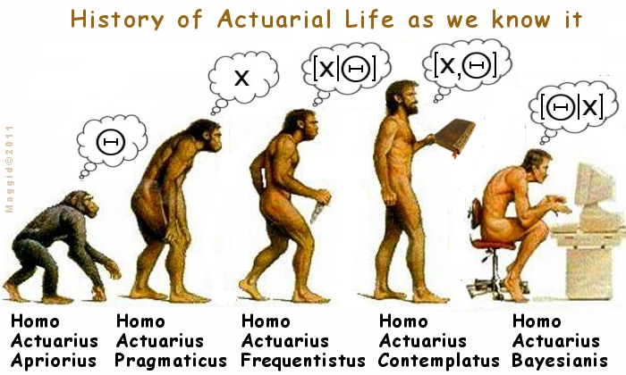
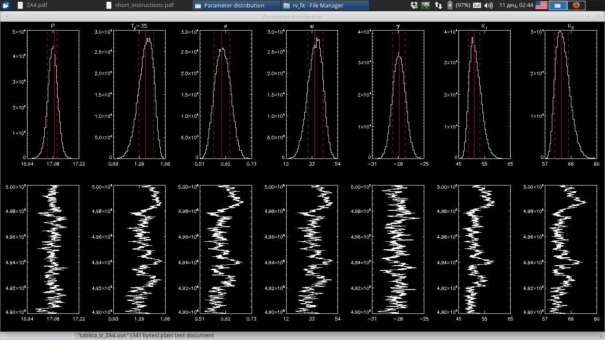
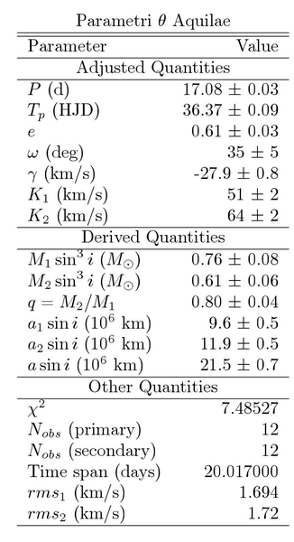
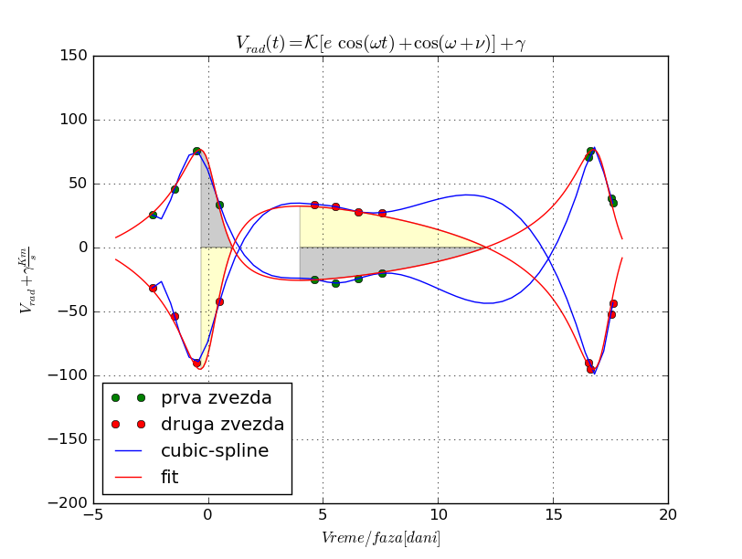

Pre nego što krenem da postujem informacije o progresu, želim da izjavim da je ovo vežba najgora vežba koju smo imali na ovom predmetu. Zanimljiva problematika svakako, ali neizvodljiva vežba sa stanovišta preciznosti i smislenosti postupka sa ovako malim brojem merenja.
Sledeća stvar koja mi smeta je to što ako ljudi koji prave ove vežbe već znaju za probleme koji se javljaju zašto ne isprave vežbu jednostavno ili da je naprave tako da bude izvodljiva (kao što se u tekstu same pripreme pominje "Potrebno je više merenja.."). Problem je u tome da je cilj izvršiti zadatak baš kako je napisano tj. po uputstvu umesto da cilj bude izvršiti zadatak tačno. Tu je problem to što će fakultet ispljunuti gomilu nekreativnih i neambicioznih studenata koji samo znaju da prate uputstva i neće biti spremni na istraživački rad. Što ih u principu odmah posle završetka osnovnih studija i čeka (master je "proba" istraživačkog rada).
Ova vežba nije izvodljiva u okviru egzaktnih merenja, već se svodi na nagađanje. Meni stvarno nije jasno kako da integralim krivu čiji analitički oblik ne znam (u principu znam, ali ne znam parametre) (čak ni ne mogu da je skiciram zato što se ne bavim time pa da kažem "ja bih proterao autobus ovuda" ali to se svodi na frekventistički pristup). Sledeća stvar koja se pominje je "kada imamo krivu (hehe, LOL) možemo da integralimo PLANIMETROM".
Ljudi, nije ovo 19. vek, imamo računare.
 Ali to nije problem sa ovom vežbom. Glavni problem je taj da mi imamo generativni model ali ga ignorišemo i stvaramo nova merenja (interpolacijom), koja u principu ne postoje. Ne bih se bunio da imamo više merenja i da onda radimo sa ovim stvarima, ali i dalje bih osećao nelagodnost.
Ali to nije problem sa ovom vežbom. Glavni problem je taj da mi imamo generativni model ali ga ignorišemo i stvaramo nova merenja (interpolacijom), koja u principu ne postoje. Ne bih se bunio da imamo više merenja i da onda radimo sa ovim stvarima, ali i dalje bih osećao nelagodnost.
Elem, Hogg i ekipa (Bovy i Lang) su jako ozbiljno shvatili ovakav problem i napisali ozbiljnu stvar o tome. U principu, pišu o tome kako se generativni model koristi za fit i da je rezultat toga DISTRIBUCIJA VEROVATNOĆE MODELA/parametara u tom modelu. Jer ako dobijemo "tačno rešenje" običnim MNK i uzmemo 1 sigma grešku mi ne govorimo o distribuciji već samo o jednom specifičnom rešenju što nam daje manje informacija o samom problemu.
"Above all we emphasize the importance of having a "generative model" for the data, even an approximate one. Once there is generative model, the subsequent fitting is non arbitrary because the model permits direct computation of likelihood of the parameters or the posteriore probability distribution."
"When fitting is used for data-driven prediction -- that is, using existing data to predict the properties of new data not yet acquired -- the conditions for model applicability are weaker. For example, a line fit by the standard method outlined in Section 1 can be, under a range of assumptions, the best linear prediction of new data, even when it is not a good or appropriate model."
Zato mi nije prijatno da interpoliram na prazno ovu krivu. Da bih pokazao koliko je loše interpolirati ovakve podatke, to sam i uradio, koristeći cubic spline kao "najprirodniji metod". (Videti grafik)
Nekako sam uspeo da se iskobeljam i da nadjem IDL proceduru koja fituje krivu radijalnih brzina na moje podatke pa onda integralim tu krivu da bih dobio parametre sistema nazad (hoću da pokažem kako od krive radijalnih brzina mogu da dobijem parametre sistema (što u principu znači da ako imam puno merenja mogu da koristim metod pomenut u uputstvu vežbe)) . Procedura se zove vrfit.
Ova metoda se zasniva na gore pomenutom Bajesovskom pristupu, Tj. daje verovatnoću za svaki parametar i što je bitnije distribucije te verovatnoće. Ovo su fitovane i zaokružene vrednosti. Raspodele su date na slici ispod. Ove neodredjenosti su majorirane 1 sigma devijacije gausijana.
 Sledeća stvar koju sam uradio je da sam na osnovu ovih parametara plotovao krivu radijalnih brzina za obe zvezde. Pritom rešavajući Keplerovu jednačinu pa korišćenjem te anomalije za izračunavanje \(\nu\)
Elem, kada sam to uradio, dobio sam "normalnu" krivu koja savršeno prolazi kroz moje podatke i zapravo ima smisla. Zatim sam koristio tu krivu da dobijem parametre koristeći metodu Lehmann-Filhesa. Integralio osenčene povrsine (videti sliku, simpsonovim pravilom) i predstavio ih sa z11, z12, z21 i z22 (videti uputstvo vežbe) (pritom pazeći na znak, u smislu da negativne površine imaju negativni znak) i naravno, kao sto je prikazano u vežbi sveo "pocetak površine" na \(\gamma\).
Ok, sivo i zuto su integraljene povrsine, sive su za prvu zvezdu, zute za drugu.
